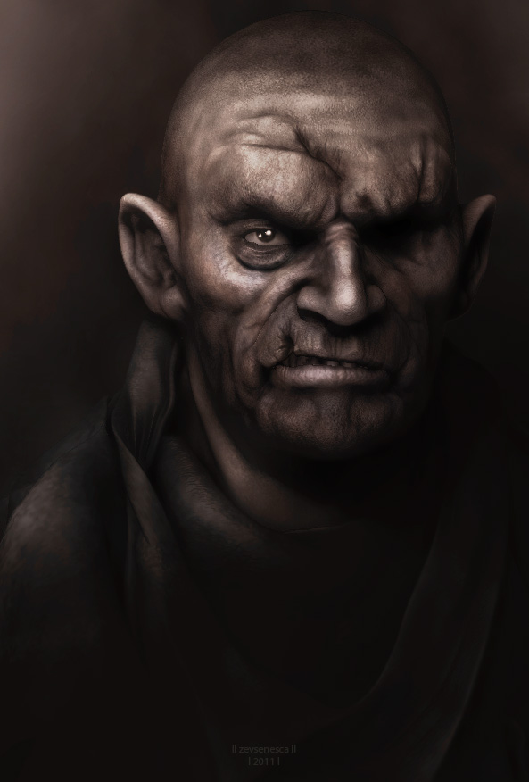
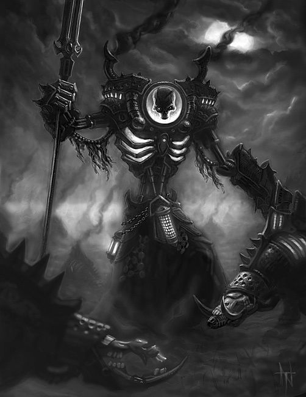
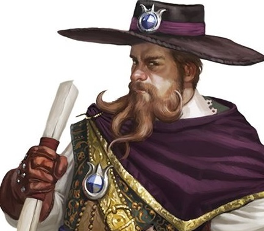

Man Shot at the Anvil!!
ARE THE GOBLINS ATTACKING!

Local Sharn man was shot in the eye by a rabit goblin this past evening. Local witness said the goblin was screaming 'DEATH TO THE HUMANS!!' while wildly shooting his bow. When the local man was questioned he refused to talk to the guard or aid them in anyway. Which leads this reporter to believe that goblins from Darguun may have a group of savage warriors here in Sharn. After questioning some of the patrons of the Anvil, it seems the man was minding his own buisness and was attacked out of the blue. 'The goblin would have killed us all if it was not for the Dwarf sitting at his table.' One patron told me. Who was that dwarf.(Text: Wren) With so much volience happening at the Anvil these days. We at the Korranberg Chronicle would suggest staying clear of the tavern for a while.
If you have any information about the shooter, the dwarf or the Darguun warriors in our city please come the the paper's office in Middle Dura, and ask for me
By: Rodney Twillet.
WARFORGED ATTACK!!!
There we were, sitting at a table in The Anvil, a wretched hive of scum and villainy deep in the heart of Lower Dura. My goblin friend, Youtherz was there, as well as a few business associates I have garnered in the past year.
Out of nowhere, a crazed warforged burst through the doors and attacked the bartender, Durnan. He had a cadre of mechanical bats with him. I have to admit the craftsmanship was amazing. Youtherz and my other associates acted quickly, dispatching the bats and turned on the war machine wreaking havoc. The out of control machine slammed
into the bartender and knocked his down, then came after my associates.
Sparks flying from its mouth like a rabid dog, it lunged toward us. I pulled my firearm, cocked the pistol and fired. The blast staggered the creature, stumbling as it fell back a step. One of my other acquaintances subdued the mechanical monster and three of the others dragged it out of the bar to bring it to the authorities.
Rumor around the city is that the Sharon Council is paying 50 pp for any warforged that are surrendered to the city. Before I could wonder why they would pay so much a familiar figure walked up to us. It was the one and only Valentine, the Explorer of Eberron! He had a proposal for us, an adventure into the heart of Sharn. I calmly spoke to the famous wizards, trading tales of magic and mystery. We accepted his offer to find his missing compatriot, and perhaps I will solve the mystery of the warforged in the process.
By: Zipp Waywocket
Valentine
Has been spotted in SHARN!

Yes that is right! My dear citizens of Sharn, THE VALENTINE THE EXPLORER OF EBERRON, is right here in our city. I wonder if he is here to explore the city of the dead, or maybe the old goblin tunnels under our city. No one knows, but he was last spotted at the Anvil in Lower Dura of all places. 'The Page Turner' a local book store in Middle Dura located on the second floor of the bazzar I know for a fact has a couple dozen copies of his latest book 'Aerenal: Undying Court.' I personally just finished reading it. What an amazing story of heroics! I can't wait to pull up a chair and hear more about the elves of Aerenal.